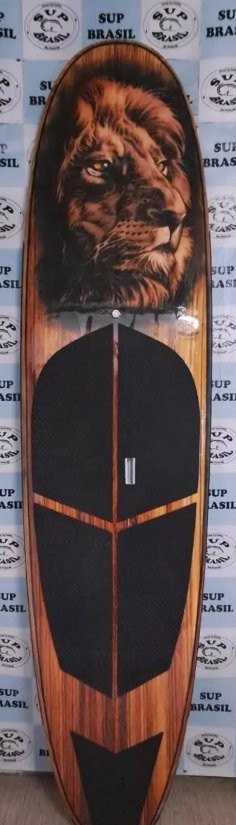

Mandala
Madeira clara, mandala em traço escuro correndo do bico à rabeta, no deck e no fundo.
10'6" × 32" × 4.5" / 185 L (medidas de exemplo)
Perguntar sobre a MandalaA SUP Brasil é de São Paulo. A gente trabalha pensando em água de represa: estável para subir, firme na remada e com desenho que não se repete de qualquer jeito.
Medidas de exemplo, a confirmar com a oficina.

Frente e verso de cada uma, fotografadas na frente do painel da casa.
Madeira clara, mandala em traço escuro correndo do bico à rabeta, no deck e no fundo.
10'6" × 32" × 4.5" / 185 L (medidas de exemplo)
Perguntar sobre a Mandala

Madeira escura de veio marcado e um leão pintado dos dois lados.
10'6" × 32" × 4.5" / 185 L (medidas de exemplo)
Perguntar sobre a LeãoEm cima de uma prancha parada, largura e volume mandam. Mais área na água dá apoio para os pés e perdoa o desequilíbrio de quem está começando. Mais litros seguram o remador e a mochila sem afundar a borda.
No deck, o antiderrapante marca onde pisar e a alça central deixa carregar a prancha equilibrada. A madeira fica à mostra, com a arte por cima.
| Largura de referência | 32" |
|---|---|
| Volume de referência | 185 L |
| Deck | antiderrapante em partes + alça central |

São três quilhas com trabalhos diferentes. Juntas, deixam a prancha andar reta na represa sem perder resposta quando você vira.
| Central | segura o rumo e reduz o ziguezague entre uma remada e outra |
|---|---|
| Laterais | dão apoio nas curvas e quando a água mexe |
| Caixa longa | a central desliza: para trás, mais rumo; para a frente, vira mais fácil |